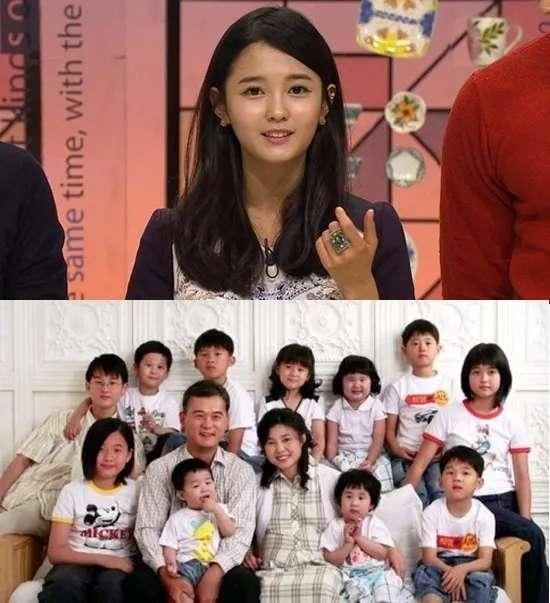
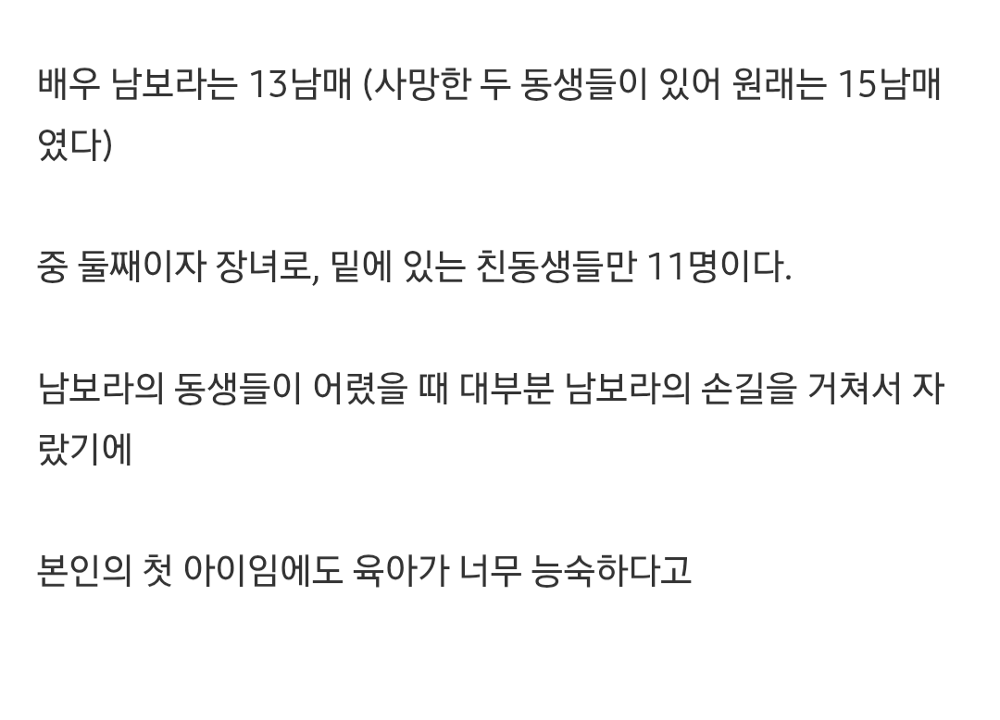

출산은 처음이지만
육아는 경력직 ㅋㅋ
경력있는 신입ㅋㅋ
아기 한명이라니 11명의 동생에 비해선 쉬워봐야 11배 아앗 존나 편하닷
ㅋㅋㅋㅋㅋㅋㅋ
다음주 육아휴지이이익~!!!!
이집 육아 잘하네
ㄷㄷ 실존 경력신입
얼굴도 너무 동안이라.한 20살 정도로 보이는데. 이야기 들어보면 육아경력이 아이 하나하나 합치면 100년 될거같은...
ㅋㅋㅋㅋㅋㅋ
와 요즘시대에 15명은 ㄷㄷ
부모님 돈이 많으셨나?